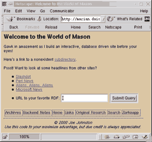
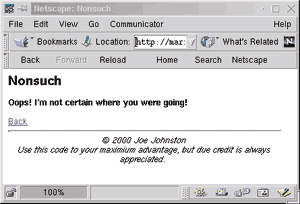

| Packages Used: |
| HTML::Mason......................CPAN |
The scene: A dusty afternoon in a rickety one horse town. The sign over the "Last Chance" saloon leans drunkenly forward and tumbleweed skips lazily across your path. You’ve fought your way through seven ambushing web projects and just barely escaped to tell about them. To your left, a shifty-eyed city slicker named ASP hawks his miracle invention to eliminate work-a-day web drudgery. To your right, a young, ruddy faced preacher thumps his ham fist righteously on his leather bound Cold Fusion manual. All around you, the young and blind pound the dry earth, desperately trying to hold together their company’s legacy home page with NotePad and Frontpage. And staring down at you from the end of the street, is the meanest, neediest, most market-driven web site east of the Mississippi that threatens to eat your lunch.
Yep, there’s no doubt about it. You’re in web country.
What Is Mason?
When the person responsible for designing an appealing web site is different from the person who writes the code to make it happen, traditional hard-wired CGI scripts just get in the way. As a web programmer, you probably don’t have much trouble adding print statements to spew HTML. But every time the designer wants to alter the site, a traditional CGI script requires the programmer to implement those changes, no matter how small. Wouldn’t you rather give control of the HTML to the designer so that you’re not in the critical path? Mason solves this problem.
Mason (http://www.masonhq.com) is an Open Source project authored by Jonathan Swartz which, together with mod_perl and Apache, offers web developers a tool to slay the maintenance dragon. In the words of the FAQ, Mason is "a Perl-based web site development and delivery engine." HTML::Mason is a freely available Perl module that makes Mason available to your Perl programs.
SSI Redux. Mason accomplishes its magic with a venerable trick. It allows Perl code to be embedded in an otherwise ordinary HTML file. In fact, these bits of embedded Perl can be collected into files called components which in turn can be called from other Mason-rendered HMTL files. Components are to Mason what subroutines are to Perl.
Yes, Server Side Include (SSI) technology is alive and well. In fact, Mason has some very successful closed source brethren. Microsoft’s Active Server Pages and Allaire’s Cold Fusion also use a special SSI language. Let’s not forget about Open Source competitors like Python’s Zope, Java Server Pages, or PHP! SSI is here to stay.
Form versus Function. To tame the wild beast of creating and maintaining a living web site, traditional HTML-spewing CGI programs are not enough. Even with a flexible language like Perl, changing the look and feel of a traditional CGI script often requires an experienced coder. "Vital" changes thought up by marketing folks and their graphic designers can often amount to several hours of patching and testing new CGI code. Even simple changes like moving a button or adding text can take time when a web site’s presentation is tied to its functionality. This is the issue that transcends the choice of implementation language and speaks to the core of dynamic web site design.
Any SSI technology will greatly reduce the friction between coders and graphics people. Because site functionality (a navigation widget, for example) can be encapsulated into a component which is then called from an otherwise static web page. The graphic designer can simply treat this code, which looks like a funny HTML tag, as a black box and move this widget to wherever his fickle heart desires. The good news is that, after implementing the navigation widget, the coder is no longer required.
For those that want the benefits of code reusability and data hiding, HTML::Mason components can be used in an object-oriented fashion.
Installation
Mason works best with Apache and mod_perl. For the record, the system I used was a Celeron 400 running Red Hat 6.0 with 128M of RAM, Apache 1.3.9 compiled from source, mod_perl 1.21, and HTML::Mason 0.8. If you don’t already have mod_perl or Mason, try your local CPAN mirror at http://www.perl.com/CPAN/modules/by-modules/HTML. Better yet, use the CPAN module. From your shell, and with administrator privileges if necessary, type:
perl -MCPAN -e "install mod_perl; install HTML::Mason"
Have I mentioned how much I love the CPAN.pm module? A lot.
Mason comes with a very complete installation guide in the file Mason.html. For those familiar with Apache, the httpd.conf changes are trivial, although I’m not sure I’d commit my entire web directory to Mason as this installation guide suggests. I made a directory off the root of my htdocs called mason.
Next, you’ll need to create a handler.pl file in your new mason root directory. This is where you’ll use modules common to all your components, avoiding the overhead of including the same module in multiple components. You’ll find a very serviceable handler.pl file in the eg subdirectory in the unpacked Mason directory. I recommend uncommenting this line in the http://www.perl.com/CPAN/modules/by-modules/HTML subroutine:
#return -1 if $r->content_type &&
$r->content_type !~ m|^text/|io;
This prevents Mason from trying to parse non-text files served from your mason directory. I suppose an entry for next year’s Obfuscated Perl Contest might include a carefully engineered GIF meant to be parsed by Mason to produce "The Perl Journal", but it won’t be submitted by me.
Another source of confusion about configuring handler.pl has to do with the initialization of Mason’s Interp (Interpreter) object, which requires a few user-dependent paths. Although most new users won’t need to directly manipulate it, the Interpreter object is responsible for executing the components and directing the resulting output. The first path is the comp_root, which points to the directory where Mason will begin to search for components. Because I wasn’t overly security conscious, I chose the mason directory. The data directory, which also needs to be specified, is a kind of scratch directory where debug files and previews are stored. Again, being a simple caveboy, I chose mason/data. For a production system, you’ll want to choose these directories a bit more carefully.
Mason 0.8 has some new syntax than earlier versions. While I believe the development is heading in the right direction, there are some issues worth noting. For instance, Mason 0.8 won’t send HTTP headers for a page with no text. This makes redirection and cookie issuing less than ideal since one would need to write a dummy page just to serve the HTTP headers. There is a workaround on the Mason mailing list, but I’d recommend staying with the last 0.7x version or downloading 0.81.
Building A Dynamic Site
The site I designed demonstrates some common tasks that most web designers face. Please note: I’m no layout expert; one of the compelling reasons to use Mason is to bridge the gap between coders and designers, and I’m a coder. The common task I tackled was to have a web page display information stored in a database. The designer wants the coder to provide a method for accessing this data, and this is where a Mason component comes in handy. I will be querying my web site Aliens, Aliens, Aliens (A3). It’s about aliens. It is a MySQL-driven web site with a mod_perl front end.
Headers and Footers. The best place to begin a discussion of components is with the Mason equivalent of "Hello, World". Many sites have standard headers and footers that provide a common look and feel to pages on the site. Here’s my header:
<html> <title><%$title%></title> <body bgcolor="<%$color%>"> <h1><%$title%></h1> <%args> $title => 'Nonsuch' $color => 'FFFFFF' # white </%args>
From Mason’s perspective, this is a component, because it’s a mixture of HTML and specially delimited Perl code. For the most part, it looks like boring HTML.
There are two different Mason tags to notice here. The first is the ubiquitous <% %> tag. Any arbitrary Perl code found inside will be evaluated and the resulting value displayed in the render page. <% 2 + 2 %> will display in a browser as 4.
Mason also has a small set of special tags used for more complex or special purpose blocks of code. Here, the <%args> </%args> section is used to "prototype" the two expected arguments for this component: title and color. In this case, two scalars may be passed to the header component; if they aren’t, "Nonsuch" and white will be used as defaults. You may declare arguments without defaults, which forces the caller to pass parameters. These parameters are lexically scoped, which means these variables cease to exist outside of the component. For those that have wanted stronger subroutine prototyping in Perl, this may appeal to you.
The footer component is even simpler, since it takes no arguments at all:
<hr>
<div align=center>
<address>
© <% 1900+(localtime)[5] %> Joe Johnston<BR>
Use this code to your maximium advantage, but
due credit is always appreciated.
<address>
</div>
</body>
</html>
Passing Parameters. Mason provides many flexible ways to pass arguments to components. One way is to simply attach URL-encoded arguments (spaces become %20, for example) to the URL of the component, just like in a GET query. Another is to call the component directly from another component, as seen in the first line of my index page:
<& header, title=>'Welcome to the World of Mason',
color=>'tan' &>
<P>Gawk in amazement as I build an interactive,
database driven site before your eyes!
<P>Here's a link to a nonexistent
<a href="microsoft">subdirectory</a>.
<P>Pssst! Want to look at some headlines from other sites?
<UL>
<LI><a href="news/slashdot">Slashdot</a>
<LI><a href="news/perl_news">Perl News</a>
<LI><a href="news/a3">Aliens, Aliens, Aliens</a>
<LI><a href="news/missing_uri">Microsoft News</a>
<LI><FORM Method=post Action="news/dhandler">
URL to your favorite RDF: <input type=text name=RDF>
<input type=submit>
</FORM>
</UL>
<& departments &>
<& footer &>
Mason’s <& &> is similar to Perl’s ampersand operator in that it calls a component much like a subroutine. The return value is discarded; the side effects are what’s important. Let’s look at the first line of this component more closely:
<& header, title => 'Welcome to the World of Mason',
color => 'tan' &>
Figure 1: A web page
generated by Mason.

This inserts the rendered version of the header, modified with the appropriate parameters, onto the web page. The rendered version of this page appears in Figure 1. Yet another way to pass arguments is to use default handlers and extra path information.
Default Handlers and XML. When a component is called that Mason can’t find, it looks in that directory for a file called dhandler. For example, I have the dhandler shown below in the mason directory:
<& header &>
<b>Oops! I'm not certain where you were going!</b>
<p><a href="index.html">Back</a>
<& footer &>
Figure 2: A customized
"File Not Found" page.

This is just a custom 404 Not Found document. The generated page is shown in Figure 2.
In the news subdirectory, I have another dhandler meant to be called with extra path information:
<%init>
my $news_site = $m->dhandler_arg;
my $rss = new XML::RSS;
my $rdf;
for ( $news_site ) { # This is like a 'switch' statement
/slashdot/ && do {
$rdf = get('http://slashdot.org/slashdot.rdf');
last;
};
/perl_news/ && do {
$rdf = get('http://www.news.perl.org/perl-news.rdf');
last;
};
/a3/ && do {
$rdf = get('http://aliensaliensaliens.com/a3.rdf');
last;
};
}
$rdf ||= get($ARGS{RDF}); # was I passed in something?
unless ( $rdf ) {
# a little tricky, use the existing mechanism
# for this 404, use old standby CGI env hack
use CGI qw/:all/;
print redirect("http://$ENV{SERVER_NAME}/mason/tpj/404");
return;
}
$rss->parse($rdf);
</%init>
<& ../header, title=> ($news_site||$rss->{'channel'}
->{'title'}) &>
<p>See the rest of <a href="<% $rss->{'channel'}
->{'link'} %>">
<% $rss->{'channel'}->{'title'} %></a>
<UL>
% for my $bit ( @{ $rss->{'items'}} ){ # not very OO ;-)
<LI><a href="<% $bit->{'link'} %>
"><% $bit->{'title'} %></a>
% if( $bit->{'description'} ) {
: <% $bit->{'description'} %>
% }
% }
</UL>
<a href="/mason/tpj/">Back</a>
<& ../footer &>
In this case the dhandler will try to retrieve an RSS (Rich Site Summary) file, an XML description that many news sites (including Perl News) use to broadcast their headlines. Looking back at the index.html component shown earlier, you can see that the dhandler parameter resembles a file in the news subdirectory. Selecting the A3 link produces the page seen in Figure 3. This is the kind of magic that makes some coders soil themselves.
Something else is going on in this news/dhandler component. Because we want users to be able to enter an arbitrary URL to an RDF (Resource Description Framework) file, this component also accepts the more traditional parameter passing method in a variable called %ARGS.
Accessing MySQL. If you’re familiar with DBI, database access is performed no differently in Mason. In fact, you can use Apache::DBI to transparently give you persistent database handles. Aliens, Aliens, Aliens is divided up into several departments, which themselves contain other departments. The departments component generates a nice table with links to all the top level departments:
<%init>
my $dbh = DBI->
connect("DBI:mysql:aliens:nfs.daisypark.org",
"username", "password") or
die "ERROR: Couldn't connect to DB $DBI::errstr";
# find all the top level departments
# All top level departments have 'home' as a parent
my $sth = $dbh->prepare(<<EOT)
or die "ERROR: prepare failed ".$dbh->errstr;
select homepage_id,segment from departments
where parent_id=1 order by segment
EOT
$sth->execute or die "ERROR: couldn't get departments! " .
$dbh->errstr;
</%init>
<TABLE Border=1>
<TR>
% while ( my $hr = $sth->fetchrow_hashref ) {
<TH><A HREF=
"http://nfs.daisypark.org/cgi-bin/render_article.pl?
article_id=<%$hr->{homepage_id}%>">
<% $hr->{segment} %></a></TH>
% }
</TR>
</TABLE>
<%cleanup>
# $dbh->disconnect;
</%cleanup>
I’ll skip the discussion of DBI and SQL and draw your attention to the embedded fetchrow loop which retrieves all the pertinent links and labels. Notice how even though the while statement is preceded by the % symbol (meaning that the rest of the line is Perl code), the plain HTML is repeated as needed. Compare this to a more traditional Perl CGI program in which the loop has a print statement outputting HTML. Although this may seem like two sides of the same coin, the difference with Mason is that your layout expert can now tweak the non-code bits without bothering you. This generally leads to more beer time, which is the second thing any good job should give you.
Finally, you’ll notice the <%cleanup> section. This is Perl code to be executed when the component has finished. Here, I would normally kill my database handle, close filehandles, or free objects. However, since Apache::DBI lets me keep database handles open from visit to visit, I have commented this out.
What Now?
I have provided only a brief introduction to this great tool. Other topics that await you in Mason-land are the fabulous Component Manager (written by Mark Schmick), lots of documentation, component debugging files, and component staging. Do yourself a favor and check Mason out.
_ _END_ _